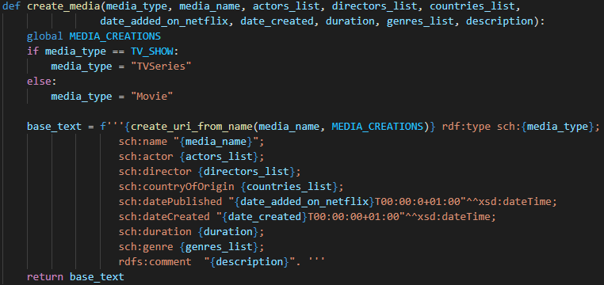

Info UAIC 2021
The project consists in a system which exposes an API capable of providing various informations and meta-data regarding movies and TV shows broadcasted by Netflix.
A user will also be able to define friendship relationships between himself and other users through a follow mechanism. Based on these relationships a user will be able to find out which shows and movies were watched by his friends.
This will be done by querying an RDF graph.
The proposed architecture consists in a monolith backend application with several layers: Controller, Service, Repository, Entity(Model). A frontend application will interact with the backend API which has several endpoints mapped to controllers. Based on the accessed endpoint, the responsible controller will call an assigned service. The service will act as an intermediate layer between the controller and the repository, which will handle data access and populate defined models.
The RDF store will be responsible for providing data regarding movies, tv shows and user realtionships, which will be returned in an RDF format.
Initially, we will have three controllers, each responsible for a certain group of functionalities. These are:
The RDF store will initially be populated with data from the Netflix Movies and TV Shows Dataset based on relationships rules defined bellow. Also, the user input will add data to the graph, with information like which movies the users have recently watched.
The user will be able to access RDF data through an UI built with ReactJS. The functionalities accessible through the interface are limited to the authentication state of the user, meaning that an unauthenticated user will only be able to use the general sparql query functionality and to search the information regarding a certain movie, while an authenticated user will have full access to application's functionalities like following a friend or adding a movie to his watchlist.
The authentication process consists in sending a username-password combination to a login endpoint and receiving back an authentication token which will be sent alongside every requests that would need authentication untill the user logs out.

Our initial data source consisted in a CSV file about Netflix shows, each row coresponding to a creative work. The structure would be [show_id, type, title, director, cast, country, date_added, release_year, rating, duration, listed_in, description]. It's worth noting that some of the fields such as cast, director or even country could be in a list format, containing multiple records. The goal was to create a valid RDF Turtle schema from all this data. Once we had the schema, it would be loaded as a graph when starting the backend API. It was important to already have the RDF schema when loading up the API, because the parsing of CSV took a lot of time.
In order to do this, we had to create our own script that required lots of text parsing. While the bigger ideea is quite simple, keep appending to a huge string that will be printed in a file, it required a lot of attention to detail.
First of all, we started by defining all entities a creative work would have, then defining the specific movie or TV show. We had to get rid of some characters which were quite problematic when we parsed the string with RDFLib, such as " or ":" for URIs. We also had to make sure we do not define something twice, like a director or a category. For dates ( on sch:datePublished and sch:dateCreated ) we used xsd:dateTime.
To have a better understanding of our approach, we put below the main method for defining a creative work. This method receives some particular data as literals (such as movie name or description) and RDF lists of uris for various things, such as actor list or genres_list.

@base <http://example.org/>.
@prefix sch: <https://schema.org/>.
@prefix rdf: <http://www.w3.org/1999/02/22-rdf-syntax-ns#>.
@prefix foaf: <http://xmlns.com/foaf/0.1/>.
@prefix rdfs: <http://www.w3.org/2000/01/rdf-schema#>.
@prefix xsd: <http://www.w3.org/2001/XMLSchema#>.
@prefix dbo: <http://dbpedia.org/ontology/>.
<watched> rdf:type rdf:Property.
<people/KofiGhanaba> rdf:type sch:Person;
foaf:name "Kofi Ghanaba".
<countries/Ghana> rdf:type sch:Country;
foaf:name "Ghana".
<categories/Dramas> rdf:type dbo:Genre;
foaf:name "Dramas".
<mediaCreations/Sankofa> rdf:type sch:Movie;
sch:name "Sankofa";
sch:actor ( <people/KofiGhanaba> <people/OyafunmikeOgunlano> <people/AlexandraDuah> <people/NickMedley> <people/Mutabaruka> <people/AfemoOmilami> <people/ReggieCarter> <people/Mzuri> );
sch:director ( <people/HaileGerima> );
sch:countryOfOrigin ( <countries/UnitedStates> <countries/Ghana> <countries/BurkinaFaso> <countries/UnitedKingdom> <countries/Germany> <countries/Ethiopia> );
sch:datePublished "2021-9-24T00:00:0+01:00"^^xsd:dateTime;
sch:dateCreated "1993-01-01T00:00:00+01:00"^^xsd:dateTime;
sch:duration 125;
sch:genre ( <categories/Dramas> <categories/IndependentMovies> <categories/InternationalMovies> );
rdfs:comment "On a photo shoot in Ghana, an American model slips back in time, becomes enslaved on a plantation and bears witness to the agony of her ancestral past.".
</users/bciubotaru> rdf:type foaf:Person;
foaf:name "Bogdan Ciubotaru".
</users/bciubotaru> <watched> <mediaCreations/Sankofa>.
</users/bciubotaru> foaf:follows </users/casoltanei>.
https://w3c.github.io/scholarly-html/
https://github.com/w3c/scholarly-html